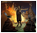

每一个国家都要发展科技，而科技的发展就会导致“理念组”的解锁。选择一个理念组并将其研究完成需要耗费数十年的光阴和大量点数。在某一个时点下对理念组的斟酌和选择体现了国家在行政、外交或军事上的侧重。
机制概述
每个国家都可以从25个不同的理念组中选择至多8个（选择画面中通常只能看到21个，因为贵族理念组、财阀理念组、神权理念组、游牧理念组和原住民理念组由独有的政府改革绑定）。这些可见理念组依  君主点数分为行政、外交、军事三类。在选择开启理念组时，该理念组所属单类的选择数量不得超过已选理念组总数的一半[1]。此限制可于游戏开始前在选项中关闭，在铁人模式下也有效。
君主点数分为行政、外交、军事三类。在选择开启理念组时，该理念组所属单类的选择数量不得超过已选理念组总数的一半[1]。此限制可于游戏开始前在选项中关闭，在铁人模式下也有效。
理念组的选择原则上不设限，但亦有以下例外：如财阀理念组对绝大多数共和制国家可用，对其余政体不可见；贵族理念组则正相反。航海理念和海军理念对原始国家无效。AI国家在选择理念是有其内在权重，使其选择既保持了随机，又能贴近史实。
每个理念组都内含7个理念。解锁组内理念会顺次给予国家相应的加成。解锁组内的最后一个理念完成此理念组后还会给予额外的奖励。
解锁新的理念槽
新的理念组槽位将随着  行政科技的进步而解锁，详见下表：
行政科技的进步而解锁，详见下表：
| 5 | 7 | 10 | 14 | 18 | 22 | 26 | 29 | |
|---|---|---|---|---|---|---|---|---|
| 1 | 2 | 3 | 4 | 5 | 6 | 7 | 8 |
取消理念组
|
|
只适用于DLC孙子兵法激活时。 |
取消理念组将解放一个无用理念组的槽位，并可以将其置换为有用的理念组。但要记住：取消一个理念组将导致失去该理念组的所有加成，并且只会退回你之前在该理念组中累计
 花费的10%[2]。这同样也会导致国家理念进度的相应倒退。
花费的10%[2]。这同样也会导致国家理念进度的相应倒退。
鉴于君主点数的重要性和取消理念组的低退返率，在选择理念组之前就要有对其适用性的长期考量。但在特定时期内的某些理念组也不能忽略，例如：
- 对土著来说，扩张理念是明显优于探索理念的，但仍然可以在早期选择探索理念的前3~4个，凭借其远距离跳跃性殖民快速邻接西方国家，满足改革条件。
- 殖民通常不是东亚或西非国家的主流玩法，但依然可以先发探索理念并探索美洲，以获取时代能力并争夺殖民主义思潮。
减少科技花费
每一个解锁的理念都会减少  -2% 的对应科技花费，如外交类理念减少
-2% 的对应科技花费，如外交类理念减少  外交科技花费，所以每一组解锁的理念将减少-14%。某些理念还会额外减少科技的花费。
外交科技花费，所以每一组解锁的理念将减少-14%。某些理念还会额外减少科技的花费。
获取创新度
全世界最先获得某项理念，或在首个国家获得的365日内获取这一理念将给予 +2 点基础创新度。
政策
- 主条目：政策
政策将在2个理念组完全完成后解锁。选择 理念将给予国家相应的修正，但每个超额政策每月会依政策类型扣除1点对应的君主点数（每组政策的额度默认为1）。一旦选择了一个政策，10年内就不可以取消。政策的选择没有其他限制，但每个国家初始只能同时激活9个政策，每类型3个。
理念花费
解锁理念需要的 理念花费基值为  400点的君主点数。[3] （根据理念组需要的君主能力类型）。
400点的君主点数。[3] （根据理念组需要的君主能力类型）。
| 条件 | |
|---|---|
| −25% | 极难模式下的AI |
| −10% | |
| −5% | |
| +0.2% | 对于每一点末日值的 |
| +20% | |
| +25% | 作为 |
| +50% |
|
理念与策略：
决议与事件：
| 事件修正 | 触发条件 | 持续时间 | ||
|---|---|---|---|---|
| +5% | 反宗教改革运动 | 天主教决议：“加入反宗教改革” | 直至以下之一发生：
| |
| −5% | 伊斯兰学术中心 | 穆斯林决议：“伊斯兰教学术中心” | 直至国教改变。 | |
| −10% | 皇家官僚机构的膨胀 | 奥斯曼事件：“皇家官僚机构的膨胀”
|
直至君主改变。 | |
| −10% | 柯塞姆苏丹 | 奥斯曼事件：“柯塞姆苏丹”
|
直至以下之一发生：
| |
| +25% | 有权势的大人物 | 匈牙利事件：“削弱王权”
|
直至君主改变。 | |
| −10% | Renaissance Glory | 那不勒斯事件：“Renaissance in Naples”
|
持续20年。 | |
| −5% | Reichshofrat | 奥地利事件：“Reichshofrat”
|
for the rest of the campaign. | |
| −10% | Reform of the Bureaucracy | 奥地利事件：“The Reform of the Bureaucracy”
|
持续20年。 | |
| −25% | Prussian Reforms of Enlightenment | 普鲁士事件：“The Enlightened Reforms of Frederick the Great”
|
直至君主改变。 | |
| −25% | Prutenic Tables | 普鲁士事件：“Prutenic Tables”
|
直至君主改变。 | |
| +10% | Sejm Veto | 波兰文化事件：“The Sejm veto all your policies”
|
until ruler changes or the event “Pacify the Sejm”. | |
| −10% | Sejm complied | 波兰文化事件：“The Sejm comply to your policies”
|
until ruler changes or the event “Pacify the Sejm”. | |
| −10% | Sigismund's Column | 波兰事件：“Sigismund's Column”
|
持续30年。 | |
| −5% | Merkuriusz Polski Ordynaryjny | 波兰事件：“Merkuriusz Polski Ordynaryjny”
|
直至君主改变。 | |
| +25% | Konfederacja | 波兰文化事件：“Konfederacja”
|
直至君主改变。 | |
| +10% | Closed China | 大明事件：“The Closure of China”
|
for the rest of the campaign. | |
| −10% | Open China | 大明事件：“The Closure of China”
|
for the rest of the campaign. | |
| −15% | Genroku | 日本文化事件：“Genroku-era”
|
持续10年。 | |
| −5% | Kokugaku | 日本文化事件：“Kokugaku”
|
for the rest of the campaign. | |
| −10% | Gossip | 日本文化事件：“Spreading Rumors”
| ||
| −25% | Astadiggajas | 毗奢耶那伽罗事件：“Astadiggajas”
|
持续60年。 | 直至君主改变。 |
| −20% | Golden age of Timbuktu | 桑海事件：“Golden Age in Timbuktu”
|
直至君主改变。 | |
| −5% | An Independent Church | 埃塞俄比亚事件：“Independence from the Patriarchate”
|
最大持续10年或直至国教改变。 | |
| −5% | Andalucian Moors | 摩洛哥事件：“摩尔难民” | 持续10年。 | |
| −5% | Shiite Migration | 波斯事件：“什叶派人才的流失”
|
持续20年。 | |
| −5% | Moorish Refugees | Muslim event after the fall of Granada | 持续25年。 | |
| −10% | Celestial Globe[4] | 穆斯林事件：“Muhammad Salih Tahtawi - The Celestial Globe”
|
持续20年。 | |
| −5% | Mian Mir[4] | 穆斯林事件：“Mian Mir”
|
直至君主改变。 | |
| −5% | Reza Abbasi[4] | 穆斯林事件：“Reza Abbasi”
|
直至君主改变。 | |
| −5% | Baha al-din al-Amili[4] | 穆斯林事件：“Baha al-din al-Amili”
|
直至君主改变。 | |
| −5% | Serafeddin Sabuncuoglu[4] | 穆斯林事件：“Serafeddin Sabuncuoglu”
|
直至君主改变。 | |
| −5% | Al-Birjandi[4] | 穆斯林事件：“Al-Birjandi”
|
直至君主改变。 | |
| −10% | Free Freethinkers | 事件：“Freethinkers Not Persecuted”
|
持续10年。 | |
| −10% | American Academy of Arts and Sciences[5] | 美国梦事件：“American Academy of Arts and Sciences”
|
持续20年。 | |
| −20% | American Philosophical Society[5] | 美国梦事件：“American Philosophical Society”
|
持续20年。 | |
| −5% | Sistine Chapel decorated by Michelangelo | 教宗国事件：“Decorate the Sistine Chapel”
|
for the rest of the campaign. | |
| −10% | Accademia del Cimento | 托斯卡纳事件：“Accademia del Cimento”
|
持续10年。 | |
| −5% | The Medici Oriental Press | 托斯卡纳事件：“The Medici Oriental Press” | 持续30年。 | |
| −10% | Innovative Court | 特质事件：“Heresiarch?”
|
直至君主改变。 |
国家理念
- 主条目：国家理念
每个国家都有七个国家理念。这些理念不消耗君主点数而是需要被解锁：每正常购买三个理念，就能解锁一个国家理念。
很多国家有独特的国家理念，而另一些国家则有基于共同的地理区域或文化的国家理念。其他的国家既没有独特的理念，也不和别国共享理念组，它们的理念从一套通用的理念当中选取。
- 国家传统
- 每个国家开局都会伴随国家传统——两个定义国家的历史与遗产的能力。
- 国家野心
- 国家同时拥有“国家野心”，是在解锁所有7个国家理念时所获得的奖励。这个奖励对每一个国家都是唯一的。
 行政理念组
行政理念组
解锁这些理念组需要行政点。
行政理念 |
+20% 行政容量修正
|
|
相关事件：行政理念组事件 |
经济理念 |
| +10% 商品产出修正
|
|
相关事件：经济理念组事件 |
扩张理念 |
| -10% 自治领地最低自治度
|
|
相关事件：扩张理念组事件 |
人文理念 |
−10% 理念花费
|
|
相关事件：人文理念组事件 |
基建理念 |
| −10% 发展成本
|
|
File:Expand infrastructure cost modifier.png 高效施工计划
相关事件：基建理念组事件 |
{kind=link}
革新理念 |
| −20% 顾问花费
|
|
相关事件：革新理念组事件 |
宗教理念 |
−25% 转变文化花费
|
|
File:Others of the same religion opinion of country.png 宗教传统
相关事件：宗教理念组事件 |
{kind=link}
 外交理念组
外交理念组
解锁这些理念组需要外交点。
宫廷理念 |
+0.5 每年正统性
|
|
相关事件：宫廷理念组事件 |
外交理念 |
| 降低外交活动对稳定的影响
|
|
相关事件：外交理念组事件 |
间谍理念 |
+100% 叛乱支持效率
|
相关事件：间谍理念组事件 |
探索理念 |
| 可以在海外殖民地区域内伪造宣称
|
|
相关事件：探索理念组事件 |
影响理念 |
| −50% 不正当要求
|
|
相关事件：影响理念组事件 |
航海理念 |
| 注释
不能用于原住民国家。 |
船只可以在近海维修
|
|
相关事件：航海理念组事件 |
贸易理念 |
+1 商人团
|
|
相关事件：贸易理念组事件 |
 军事理念组
军事理念组
解锁这些理念组需要军事点。
贵族理念 |
| 注释
适用于： |
+1 陆军将领围城
|
|
相关事件：贵族理念组事件 |
财阀理念 |
| 注释
适用于 |
+25% 省份贸易竞争力修正
|
|
File:Monthly reform progress.png 权利法案
相关事件：财阀理念组事件 |
{kind=link}
神权理念 |
| 注释
|
+1% 对异端传教能力
|
|
+0.5 每年正统性
−10% 转变文化花费
相关事件：神权理念组事件 |
 原住民理念 |
| 注释
适用于 原住民政体国家。 |
| +25% 思潮传播
|
|
相关事件：原住民理念组事件 |
游牧理念 |
| 注释
适用于 |
+25% 骑兵作战能力
|
|
+0.5 每年部落团结
相关事件：游牧理念组事件 |
防守理念 |
+1 敌军损耗
|
|
相关事件：防御理念组事件 |
佣兵理念 |
+5% 雇佣兵训练度
|
|
相关事件：佣兵理念组事件 |
海军理念 |
| 注释
不能用于原住民国家。 |
-100% 海上炮击花费
|
相关事件：海军理念组事件 |
进攻理念 |
+10% 陆军士气恢复速度
|
|
相关事件：进攻理念组事件 |
质量理念 |
+5% 训练度
|
|
相关事件：质量理念组事件 |
数量理念 |
+33% 陆军规模上限修正
|
|
相关事件：数量理念组事件 |
事件
- 主条目：理念组事件
理念组事件是基于脉冲的事件。他们基于国家的理念组（不是所有理念组有同样的间隔时间）每隔一段时间（5年）发生。
此外，理念的选择对事件的发生频率—平均发生时间有一定影响，即它们能够增加或减少特定事件相对于同样脉冲组（Pulse Group）中其他事件发生的概率。
AI 权重
AI的理念组选择不是由历史文件预设的序列决定的，而是由国家的现状动态决定的。[6] 在决定选取理念组的时候，AI会使用“权重系统”：每个理念组都会有一个权重，一个理念组的权重越高，AI选择该理念组的几率就越大。AI永远不会选择权重为0的理念组。[7]
| 理念组 | 基础权重 | 权重修正[8] |
|---|---|---|
| 0.45 |
| |
| 0.4 | ||
| 游牧理念 | 20 | |
| 神权理念 | 0.9 |
|
| 原住民理念 | 1.0 | |
| 革新理念 | 0.3 |
|
| 0.9 |
| |
| 间谍理念 | 0.75 | |
| 0.67 | ||
| 0.94 | ||
| 防御理念 | 0.77 | |
| 贸易理念 | 0.7 | |
| 经济理念 | 0.85 |
|
| 0.75 |
| |
| 航海理念 | 0.41 | |
| 0.49 | ||
| 数量理念 | 1 | |
| 0.48 | ||
| 行政理念 | 0.96 |
|
| 0.9 |
| |
| 影响理念 | 0.5 | |
| 0.31 |
参考资料
- ↑ 参见 /Europa Universalis IV/common/defines.lua：MAX_IDEA_GROUPS_FROM_SAME_CATEGORY = 0.5
- ↑ 参见 /Europa Universalis IV/common/defines.lua: ABANDON_IDEAGROUP_REFUND = 0.10
- ↑ 见 /Europa Universalis IV/common/defines.lua: PS_BUY_IDEA = 400
- ↑ 4.0 4.1 4.2 4.3 4.4 4.5 只可用于 星与新月 DLC。
- ↑ 5.0 5.1 只可用于 美国梦 DLC。
- ↑ 现在也可以通过把/Europa Universalis IV/common/defines.lua中的"AI_USES_HISTORICAL_IDEA_GROUPS" 调成 1 来变回之前的设定。注意，现在AI在自定义国家或随机开局中不再会采用历史理念。
- ↑ 权重和权重修正参见/Europa Universalis IV/common/ideas/00_basic_ideas.txt 中每个理念组最下面 (ai_will_do)。
- ↑ 多个有效的修正将会累计。